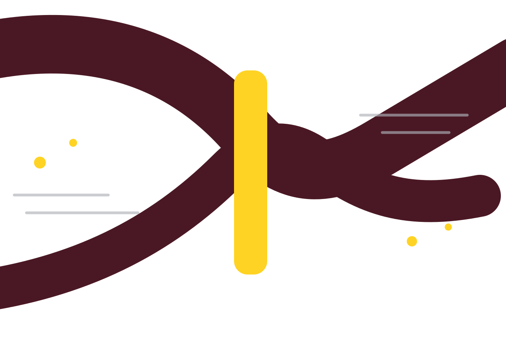

Compact language layer
Menos tokens.
Mesma intenção.
Uma camada reversível para mapear linguagem repetitiva, reduzir contexto e tornar fluxos com LLM mais eficientes.
Quando o usuário solicitar um resumo, preserve os pontos essenciais e responda em português.Saída TokLang
@sum{keep:essential,lang:pt-BR}Economia ilustrativa−68%
